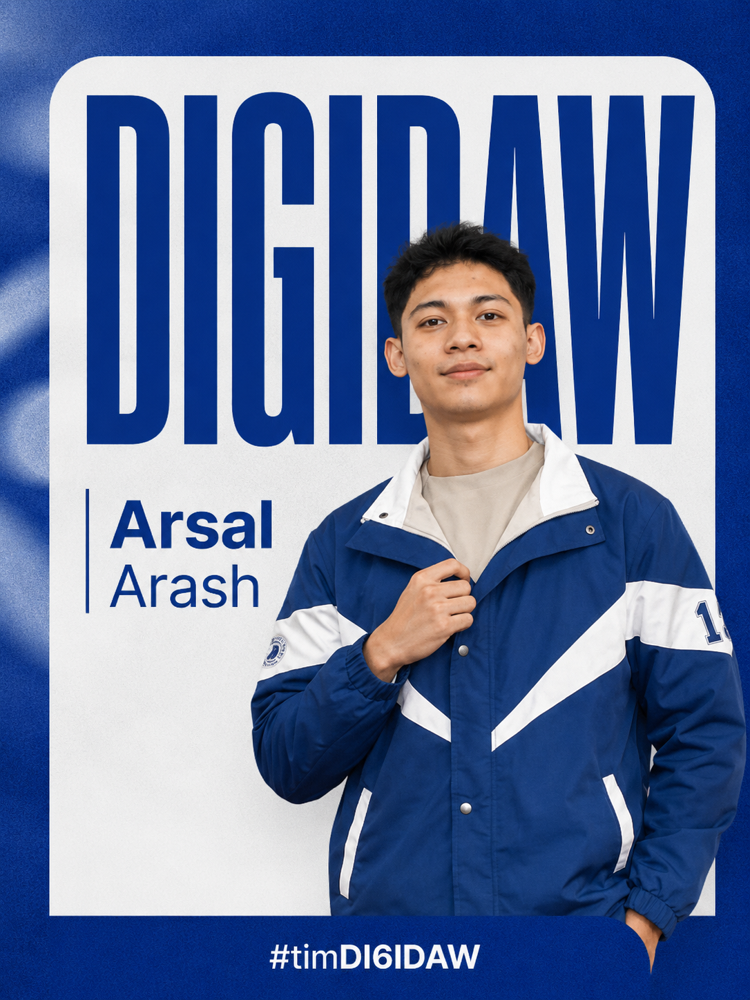
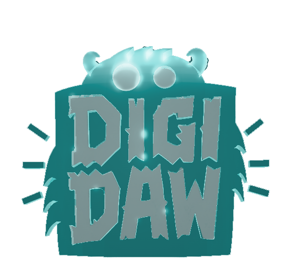
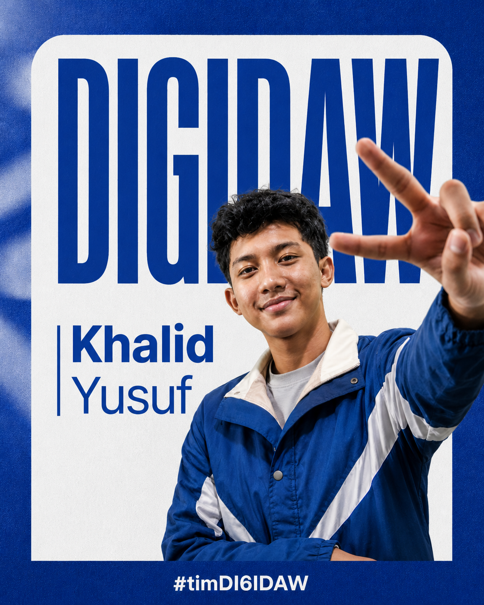
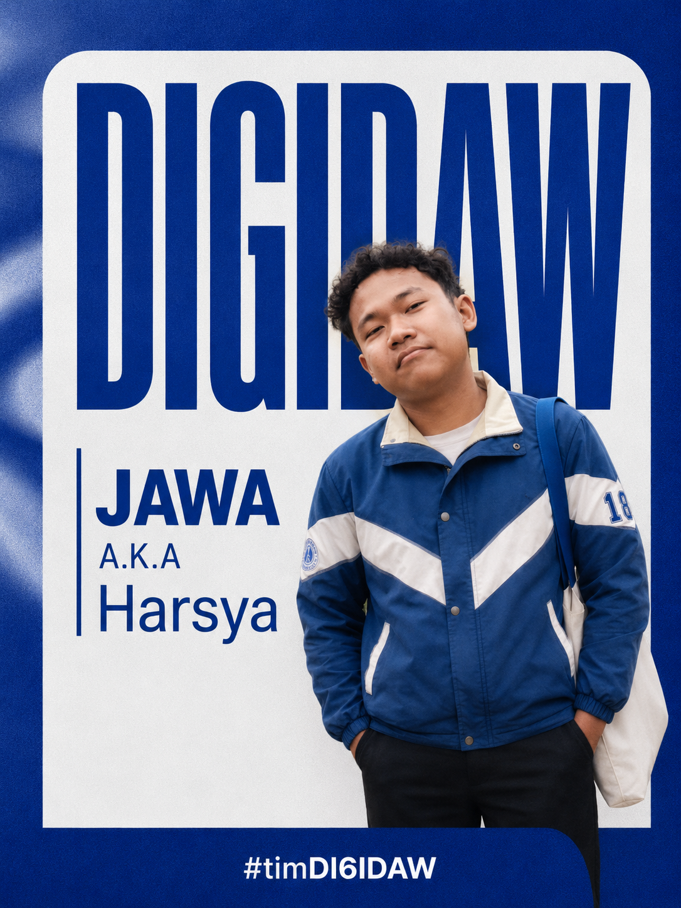
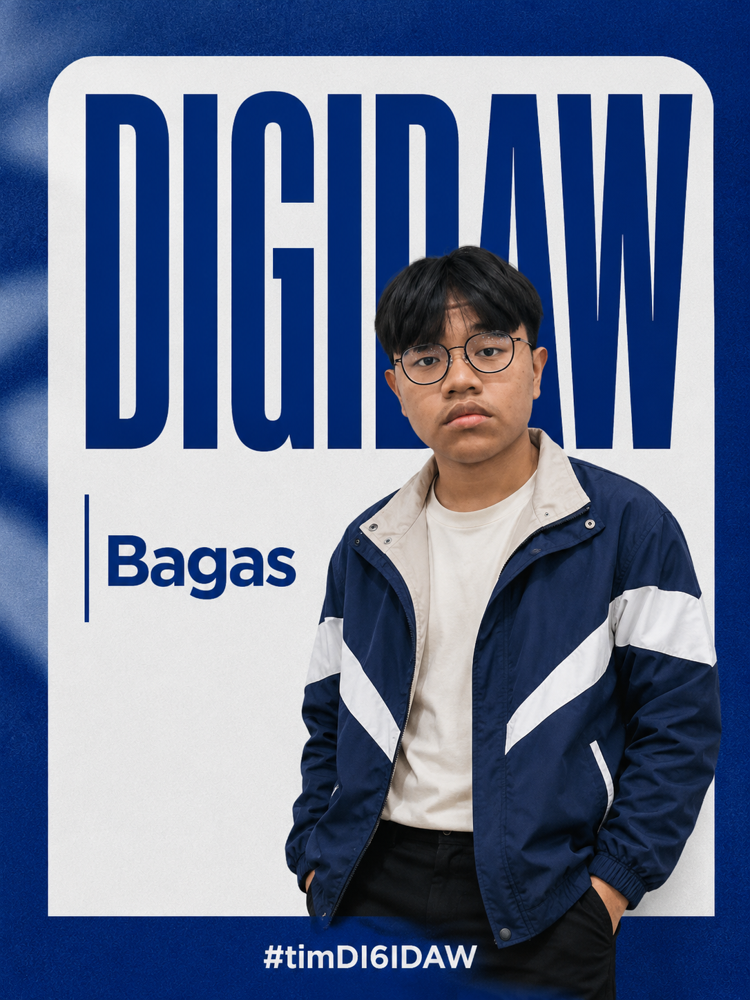

IoT Developer
Arsal Arash
Motivasi: Membangun teknologi sekolah yang bukan cuma keren dilihat, tapi benar-benar berguna untuk banyak orang.
Wadah inovasi teknologi, robotika, IoT, dan karya rekayasa siswa yang berfokus pada solusi nyata untuk lingkungan sekolah dan masyarakat.

Tim teknologi sekolah yang menjadi ruang eksperimen, kolaborasi, dan pengembangan karya berbasis rekayasa modern.
DIGIDAW adalah tim mekatronika SMAN 2 Cikarang Selatan yang bergerak dalam bidang elektronika, pemrograman, robotika, Internet of Things, dan riset teknologi. Tim ini dibangun sebagai wadah bagi siswa untuk mengembangkan ide menjadi karya nyata melalui proses desain, uji coba, evaluasi, dan pengembangan berkelanjutan.
Pengembangan sistem mekanik dan kendali otomatis.
Menghubungkan sensor, data, dan dashboard digital.
Perakitan rangkaian, sensor, modul, dan aktuator.
Membangun logika sistem melalui kode dan aplikasi.
Menganalisis masalah dan mencari solusi yang aplikatif.
Mengubah ide siswa menjadi prototype bernilai guna.
Anggota Tim DIGIDAW

Motivasi: Membangun teknologi sekolah yang bukan cuma keren dilihat, tapi benar-benar berguna untuk banyak orang.

Motivasi: Mengubah rangkaian sederhana menjadi sistem pintar yang bisa menyelesaikan masalah nyata.

Motivasi: Membuat konsep teknologi yang rapi, kuat, dan mudah dikembangkan oleh generasi berikutnya.

Motivasi: Menghubungkan sensor, data, dan dashboard agar informasi bisa dibaca secara cepat dan akurat.

Motivasi: Menguji setiap ide sampai benar-benar layak digunakan, bukan sekadar jadi prototype.

Motivasi: Menyampaikan teknologi dengan visual dan cerita yang mudah dipahami oleh semua orang.
Arah kerja DIGIDAW berfokus pada inovasi yang relevan, bermanfaat, dan dapat dikembangkan oleh siswa.
Menjadi tim mekatronika sekolah yang unggul, inovatif, dan mampu menciptakan teknologi bermanfaat bagi lingkungan sekitar.
Project DIGIDAW dirancang sebagai solusi praktis dengan pendekatan teknologi modern dan pemanfaatan data.
Sistem monitoring banjir berbasis sensor, LoRa, dan dashboard IoT untuk membaca kondisi air serta status potensi banjir secara real-time.
Sepatu pintar berbasis sensor dan aplikasi digital yang dirancang untuk keamanan, tracking, dan pengalaman pengguna yang lebih cerdas.
Sistem penyiraman tanaman otomatis berbasis Arduino yang membantu efisiensi penggunaan air dan perawatan tanaman.
Kumpulan gagasan teknologi yang dapat dikembangkan menjadi prototype atau project kompetisi berikutnya.
Konsep cadangan energi sekolah berbasis panel surya dan biogas untuk mendukung listrik darurat secara lebih mandiri.
Sistem pemantauan lingkungan sekolah seperti suhu, kelembapan, kualitas udara, dan keamanan area berbasis sensor.
Konsep laboratorium robotika sekolah sebagai pusat pelatihan teknologi, eksperimen, dan pengembangan inovasi siswa.
Pencapaian DIGIDAW dikembangkan melalui project, presentasi, kompetisi, dan kolaborasi teknologi di lingkungan sekolah.
Mengembangkan karya berbasis sensor, komunikasi data, dan dashboard sebagai solusi pemantauan lingkungan.
Menjadikan kompetisi sebagai ruang uji gagasan, validasi produk, dan pengembangan kemampuan presentasi tim.
Mengemas project teknologi menjadi konsep bisnis yang lebih terstruktur, realistis, dan bernilai guna.
Menerapkan proses rekayasa teknologi melalui riset, desain, pembuatan prototype, dan evaluasi karya.
Ruang diskusi terbuka. Pertanyaan yang dikirim akan tampil di web dan dapat dijawab oleh siapa pun, tidak hanya tim DIGIDAW.
Semua pertanyaan dan jawaban tersimpan di browser menggunakan localStorage.
Kirim pertanyaan atau topik diskusi. Setelah dikirim, pertanyaan langsung muncul di forum dan bisa dijawab oleh siapa pun.